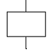
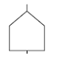
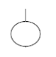
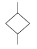
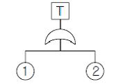
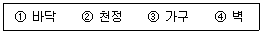
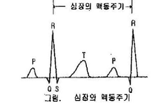
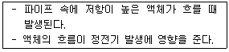
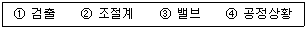
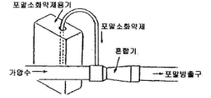

1과목: 안전관리론
1. 버드(Bird)의 재해발생에 관한 이론 중 기본원인은 몇 단계에 해당되는가?
2. 다음은 부주의의 발생 현상이다. 혼미한 정신상태에서 심신의 피로나 단조로운 반복작업시에 일어나는 현상은?
3. 다음 중 헤드십(headship)의 특성으로 볼 수 없는 것은?
4. 다음 중 리더십의 유형 분류로 볼 수 없는 것은?
5. 매슬로우(Maslow)의 인간의 욕구단계 중 5번째 단계에 속하는 것은?
6. 사고의 직접 원인 중 인적요인에 해당하진 않은 것은?
7. 다음 중 보호구가 갖추어야 할 구비 요건과 거리가 먼 것은?
8. 안전ㆍ보건표지 중 안내표지의 사용 사례로 옳은 것은?
9. 베어링을 생산하는 사업장에 300명의 근로자가 근무하고 있다. 1년에 21건의 재해가 발생하였다면 이 사업장에서 근로자 1명이 평생 작업시 약 몇 건의 재해를 당할 수 있겠는가? (단, 1일 8시간, 1년에 300일 근무, 평생근로시간은 10만 시간이다.)
10. 다음 중 Project Method 의 진행방법을 올바르게 나열한 것은?
11. 바람직한 안전교육을 진행시키기 위한 4단계 가운데 피교육자로 하여금 작업습관의 확립과 토론을 통한 공감을 가지도록 하는 단계는?
12. A 공장의 근로자가 440명, 1일 근로시간이 7시간 30분, 년간 총근로시일수는 300일, 평균출근율 95%, 총잔업 시간이 10000시간, 지각 및 조퇴시간 500시간일 때, 이 기간 중 발생한 재해는 휴업재해 4건, 불휴재해 6건이라고 한다. 이 공장의 도수율은 얼마인가?
13. 적성 배치에 있어서 고려되어야 할 기본 사항에 해당되지 않는 것은?
14. 다음 중 재해조사의 목적에 해당되지 않는 것은?
15. 다음 중 안전관리의 계획부터 실시ㆍ평가까지 모든 것이 생산 라인을 통하여 행하는 특징을 갖는 조직은?
16. 다음의 일상점검 중 작업 전에 수행되는 내용에 해당하지 않는 것은?
17. 경보기가 울려도 전철이 오기까지 아직 시간이 있다고 판단하여 건널목을 건너다가 사고를 당했다면 이 재해자의 행동성향으로 옳은 것은?
18. 허즈버그(Herzberg)의 위생-동기이론에서 동기요인에 해당 하는 것은?
19. 안전교육의 개념에서 학습경험선정의 원리와 가장 거리가 먼 것은?
20. 다음 중 몇 사람의 전문가에 의해 견해를 발표하고 참가자로 하여금 의견이나 질문을 하게 하는 토의방식은?
2과목: 인간공학 및 시스템안전공학
21. 안전ㆍ보건표지에서 경고표지는 삼각형, 안내표지는 사각형, 지시표지는 원형 등으로 부호가 고안되어 있다. 이처럼 부호가 이미 고안되어 이를 사용자가 배워야 하는 부호를 무엇이라 하는가?
22. 다음 중 정보의 전달에 있어서 청각장치보다 시각장치를 사용해야 하는 경우로 옳은 것은?
23. 다음 중 인간의 손이나 발을 이동시켜 조작장치를 조작하는데 걸리는 시간을 표적까지의 거리와 표적 크기의 함수로 나타내는 모형은?
24. 다음 중 표시장치에서 숫자를 설계할 때 표준으로 권장되는 폭 대 높이의 비율은 약 얼마인가?
25. 다음 중 분석하고자 하는 작업을 기본행위로 분할하여 각 행위의 성공 또는 실패확률을 결합함으로써 분석 작업의 성공 확률을 추정하는 정량적인 인간신뢰도 분석 방법은?
26. 일정한 고장율을 가진 어떤 기계의 고장율이 시간당 0.004일 때 10시간 이내에 고장을 일으킬 확률은?
27. FTA에서 사용되는 사상기호 중 결함사상을 나타낸 것은?




28. 다음 FT도에서 정상사상의 발생확률은 얼마인가? (단, ①과 ②의 발생확률은 각각 0.1, 0.2이다.)

29. 욕조곡선에서의 고장형태 중 일정형의 고장은 어느 고장 기간에 나타나는가?
30. 다음 중 인간이 기계보다 우수한 기능으로 거리가 가장 먼 것은?
31. 화학설비에 대한 안전성 평가방법 중 공장의 입지조건이나 공장 내 배치에 관한 사항은 어느 단계에서 하는가?
32. 종이의 반사율이 70%이고, 인쇄된 글자의 반사율이 10%이라면 대비(Luminance Contrast)는 약 얼마인가?
33. 다음과 같은 실내 표면에서 일반적으로 반사율의 크기를 올바르게 나열한 것은?

34. 다음 중 인간의 감각 반응속도가 빠른 것부터 순서대로 나열한 것은?
35. 자동차는 타이어가 4개인 하나의 시스템으로 볼 수 있다. 타이어 1개가 파열될 확률이 0.01 이라면 이 자동차의 신뢰도는 약 얼마인가?
36. 다음 중 “Q10 효과”에 직접적인 영향을 미치는 인자는?
37. 프레스 작업 중에 금형 내에 손이 오랫동안 남아 있어 발생한 재해의 경우 다음의 휴먼 에러 중 어느 것에 해당 하는가?
38. 인체 계측 중 운전 또는 워드 작업과 같이 인체의 각 부분이 서로 조화를 이루며 움직이는 자세에서의 인체치수를 측정하는 것을 무엇이라 하는가?
39. 반경이 15cm 인 조종구(ball control)를 50° 움직일 때 커서(cursor)는 2cm 이동한다. 이러한 선형표시장치의 회전형 제어장치의 C/R비는 약 얼마인가?
40. 다음 중 누적외상증의 원인으로서 가장 거리가 먼 것은?
3과목: 기계위험방지기술
41. 산업안전기준에 관한 규칙에서 프레스 금형 조정작업시 안전블록을 사용하는 경우에 해당 되지 않는 것은?
42. 프레스기계의 위험을 방지하기 위한 본질 안전화가 아닌 것은?
43. 보일러의 과열 원인이 아닌 것은?
44. 보일러에 관한 설명으로 옳지 않은 것은?
45. 아크(arc)용접 작업시, 특히 감전의 위험 발생의 높은 것은?
46. 하중이 정격을 초과하였을 때 자동적으로 상승이 정지되는 장치는?
47. 압력 용기의 압력 방출장치 봉인에 사용되는 재료는?
48. 선반에서 돌출하여 회전하고 있는 가공물에 설치하여야할 방호조치는?
49. 보일러의 폭발사고 예방을 위한 장치가 아닌 것은?
50. 인장강도가 44kgf/mm2이고, 호칭지름이 20mm인 볼트의 안전하중은 약 몇 kgf인가? (단, 안전계수는 5로 한다.)
51. 동력 차단장치를 근로자가 작업위치를 이탈하지 아니하고 조작할 수 있는 위치에 설치하여야 하는 가공작업이 아닌 것은?
52. 양중기에 사용될 수 있는 와이어로프는?
53. 공작기계 작업에서 안전수칙으로 틀린 것은?
54. 회전중인 연삭숫돌이 근로자에게 위험을 미칠 우려가 있을시 해당 부위에 설치하여야 할 덮개의 최소단위 지름은?
55. 재료의 항복점, 인장강도, 신장 등을 알 수 있는 시험방법은?
56. 훅 걸이용 와이어로프 등이 훅으로부터 벗겨지는 것을 방지하는 방호장치는?
57. 현장에서 기계기구의 안전성을 유지하기 위하여 매일 작업 전, 작업 중, 작업 후에 실시하는 안전점검은?
58. 회전수가 300rpm, 연삭숫돌의 지름이 200mm 일 때 원주속도는 몇 m/min인가?
59. 전동공구 작업시 주의사항으로 틀린 것은?
60. 사전에 회전축의 재질, 형상 등에 상응하는 회전시험을 할때, 비파괴검사를 실시해야 하는 고속회전체는 어느 것인가?
4과목: 전기위험방지기술
61. 인체의 대전에 기인하여 발생하는 전격의 발생한계 전위는 몇 [kV] 정도 인가?
62. 어느 변전소에서 고장전류가 유입되었을 때 도전성 구조물과 그 부근 지표상의 점과의 사이(약1m)의 허용접촉전압 은? (단 심실세동전류 Ik=(0.116/√t[A], 인체의 저항: 1000[Ω], 지표면의 저항율 : 150[Ω・m], 통전시간을 1[초]로 한다.)
63. 심장맥동주기(그림)의 어느 위상에서 전격이 인가되었을때 심실세동을 일으킬 확률이 가장 높은 부분은?

64. 반도체 취급시에 정전기로 인한 재해 방지 대책으로써 거리가 먼 것은?
65. 인체의 전기저항을 500Ω이라 하면, 심실세동을 일으키는 정현파 교류의 에너지 측면의 안전한계는 몇 [J] 인가?
66. 다음 중 1종 장소에 적합하지 않은 방폭전기기기는?
67. 다음 중 정전작업이 끝난 후 필요한 조치 사항으로 가장 옳은 것은?
68. 다음 설명과 가장 관계가 깊은 것은?

69. 피뢰침의 제한 전압이 800kV, 충격절연강도가 1,260kV라 할 때, 보호여유도는 몇 %인가?
70. 인체가 감전되었을 때 그 위험성을 결정짓는 주요 인자와 거리가 먼 것은?
71. 전력량 1[kWh]를 열량으로 환산하면 몇 [kcal] 인가?
72. 300A 의 전류가 흐르는 저압 가공전선로의 한 선에서 허용 가능한 누설전류는 몇 [mA] 를 넘지 않아야 하는가?
73. 전폐형의 구조로 되어 있으며, 외부의 폭발성 가스가 내부로 침입해서 폭발하였을 때 고열가스나 화염이 협격을 통하여 서서히 방출시킴으로써 냉각되는 방폭구조는?
74. 제전기의 제전효과에 영향을 미치는 요인으로 볼 수 없는 것은?
75. 다음 중 계통접지의 목적으로 가장 옳은 것은?
76. 비파괴검사 방법 중 자성체 분말을 뿌려 금속(자성체)파이프 등의 결함을 발견하는 방법이 있다. 이 방법은 어떤 매질상수에 비례하는 성질을 이용한 것인가?
77. 지락이 생긴 경우 접촉상태에 따라 접촉전압을 제한할 필요가 있다. 인체의 접촉상태에 따른 허용접촉전압을 나타낸 것으로 다음 중 옳지 않은 것은?
78. 충격전압시험시의 표준충격파형을 1.5×50㎲ 로 나타내는 경우 1.2 와 50 이 뜻하는 것은?
79. 다음 중 지락 보호의 목적과 직접적으로 연관 있는 것은?
80. “화염일주 한계”란 무엇을 말하는가?
5과목: 화학설비위험방지기술
81. 다음 각 물질에 대한 저장법으로 잘못된 것은?
82. 산업안전기준에 관한 규칙에서 정한 위험물질의 종류 중 폭발성물질 및 유기과산화물이 아닌 것은?
83. 기상폭발 피해예측의 주요 문제점 중 압력 상승에 기인하는 피해가 예측되는 경우에 검토를 요하는 사항으로 거리가 가장 먼 것은?
84. 다음 중 폭발하한계에 대한 설명으로 틀린 것은?
85. 다음 중 회분식 반응기의 특징으로 볼 수 없는 것은?
86. 프로판(C3H8)의 연소하한계가 2.2vol% 일 때 연소를 위한 최소산소농도(MOC)는 몇 vol% 인가?
87. 공기 중에서 아세틸렌의 폭발하한계는 2.2vol% 이다. 이 경우 표준상태에서 아세틸렌과 공기의 혼합기체 1m3 에 함유되어 있는 아세틸렌의 양은 약 몇 g 인가? (단, 아세틸렌의 분자량은 26 이다.)
88. 고압가스 용기 파열사고의 주요 원인 중 하나는 용기의 내압력(耐壓力) 부족이다. 다음 중 내압력 부족의 원인으로 틀린 것은?
89. 소화방식의 종류 중 주된 작용이 질식소화에 해당되는 것은?
90. 다음 중 분진폭발순서를 올바르게 배열한 것은?
91. 공기 중에서 수소의 폭발하한계가 4.0vol%, 상한계가 75.0vol% 라면 수소의 위험도는 얼마인가?
92. 다음 중 산업안전보건법에서 지정한 화학설비에 해당되지 않는 것은? (단, 부속설비는 제외한다.)
93. 다음 [보기]에서 일반적인 자동제어 시스템의 작동순서를 바르게 나열한 것은?

94. [그림]은 포말소화약제혼합장치 중 무슨 장치에 해당하는가?

95. 건조설비의 구조는 구조부분, 가열장치, 부속설비로 구성 된다. 다음 중 “구조부분”에 속하는 것은?
96. 다음 중 관의 지름을 변경하는데 사용되는 관의 부속품으로 가장 적절한 것은?
97. 다음 중 자연발화가 쉽게 일어나는 조건으로 틀린 것은?
98. 산업안전기준에 관한 규칙상 건조설비를 사용하여 작업을 하는 경우 폭발 또는 화재를 예방하기 위하여 준수하여야 하는 사항으로 적절하지 않은 것은?
99. 다음 중 산업안전기준에 관한 규칙에서 정한 독성물질에 대한 정의로 틀린 것은?
100. 다음 중 분해폭발시 발열량이 가장 큰 것은?
6과목: 건설안전기술
101. 지반 등을 굴착하는 때 굴착면의 기울기 기준으로 틀린 것은?
102. 10cm 그물코의 방망을 설치한 경우에 망 밑부분에 충돌위험이 있는 바닥면 또는 기계설비와의 수직거리(H2)는 얼마 이상이어야 하는가? (단, L(1개의 방망일 때 짧은 변의 길이)=12m, A(방망 주변의 지지점 간격)=6m)
103. 흙의 투수계수에 관한 다음 설명 중 틀린 것은?
104. 다음 중 유해위험방지계획서 제출대상공사가 아닌 것은?
1⑤. 지반 개량공법 중 하나인 지하연속벽 공법(Slurry Wall)의 특징이 아닌 것은?
106. 건설현장에서는 전동기계ㆍ기구에 보통 정격감도전류가 30mA 이하인 누전차단기를 많이 사용하고 있는데 이 경우 누전시 작동시간은 얼마 이내이어야 하는가?
107. 다음 중 구조물의 보수ㆍ보강공법이 아닌 것은?
108. “산업안전기준에 관한 규칙”에 규칙된 사항으로 철골작업을 중지하여야 할 경우에 해당되지 않는 것은?
109. 가설통로의 구조에 대한 다음 설명 중 틀린 것은?
110. 지름이 15cm이고 높이가 30cm인 원기둥 콘크리트 공시체에 대해 압축강도시험을 한 결과 46000kg에 파괴되었다. 이때 콘크리트 압축강도는?
111. 콘크리트 옹벽의 안정 검토 사항이 아닌 것은?
112. 산업안전기준에 관한 규칙에서 규정하고 있는 거푸집 동바리 구조의 안전조치 사항으로 잘못된 것은?
113. 달비계ㆍ달대비계 및 말비계를 제외한 비계의 작업발판에 관한 사항 중 적합하지 않는 것은?
114. 화물을 취급하여 부두ㆍ안벽 등 하역작업을 할 경우에 위험 방지를 위해 준수하여야 할 사항으로 옳지 않은 것은?
115. 다음 건설기계 중에서 굴착기계가 아닌 것은?
116. 잠함 또는 우물통의 내부에서 굴착작업을 할 때 급격한 침하로 인한 위험방지를 위해 준수하여야 할 사항은?
117. 콘크리트 슬럼프시험은 무엇을 검사하는 것인가?
118. 강관비계의 설치 기준으로 옳은 것은?
119. 그물코 크기가 가로, 세로 각각 10센티미터의 매듭방망인 방망사의 신품에 대해 등속인장강도 시험을 하였을 경우 그 강도가 최소 얼마 이상이어야 하는가?
120. 터널공사 작업 전 시공계획을 작성할 때 시공계획에 반드시 포함되어야할 사항이 아닌 것은?